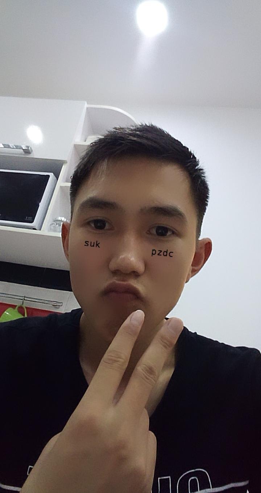

Menin atym Nurzhan. Men Qazaq Tekhnologya jane Biznes Universitetinin 1-shi kurs studentimin.
Bos uakytymda suret salgandy jane scenarii qyrgandy unatamyn.
Дойбы (орыс. шашки) — спорт түрі. Дойбыны алпыс төрт (орыс дойбысы) не жүз (халықаралық дойбы) шаршыға бөлінген тақтада он екі (орыс дойбысы) не жиырма (халықаралық дойбы) таспен екі адам ойнайды.[1]
Ойынның мақсаты — қарсыласының тастарын түгел жою немесе жүріс жолдарын бөгеп тастау. Дүниежүзілік дойбы федерациясы (FMІD) 1947 ж. құрылған. Оған отыздан астам ел мүше.
Тарихы
Дойбы – бір жағынан ежелгі, екіншіден жас ойын. Ежелгі болатын себебі, ойынға арналған құралдар сонау ерте заманда Мысыр пен Русьтегі Киев аймақтарындағы қазба жұмыстары кезінде табылған. Сонымен бірге ежелгі болатын себебі, қазіргі заманғы зерттеушілер дойбының таратылу тарихы мен жолдарын әлі күнге дейін тапқан жоқ – олар ғасырлар қойнауында жасырын жатыр.
Жас болатын себебі, ойын тәртібі уақыт ағысымен өзгерістерге ұшырап, тұрақтандырылды, ол осы ғасырдың орта тұсына таман қазіргі заманға лайықталды. Ежелгі Римде дойбы ойыны «латрункул» деген атауға ие. Бұл латын сөзі «латро», яғни қазақшаға аударғанда – сарбаз, жауынгер, т.с.с. мағына береді. Демек, ойын екі армияның соғысымен сипатталған әскери болып табылады.
Дойбы тақтасындағы соғыстың қалай өткенін Исидор Севильскийдің (560-686 б.э.) хабарламасынан білуге болады. Ол жүрістер туралы төмендегіше жазады: «Дойбылардың бір бөлігі тәртіппен, бір бөлігі анда-мұнда жүреді, сондықтан да олардың жартысы қарапайым (ординарии), ал қалғандары адасқандар (ваги) деп аталады.
Қазіргі таңда дойбы дүние жүзінің он үш елінде әр түрлі атаумен, өзіндік ережемен ойналады. 1894 ж. дойбыдан (орыс дойбысынан) алғашқы дүниежүзілік чемпионат өтті. Дүниежүзілік олимпиада 1986 жылдан (халықаралық дойбыдан), дүниежүзілік чемпионат 1984 жылдан (халықаралық дойбыдан, ал орыс дойбысынан 1985 жылдан) өткізіліп келеді. Қазақстанда дойбыдан ресми жарыстар 1935 жылдан бері өтіп келеді. Кейбір деректерге қарағанда дойбы қазақ жеріне 1740 жылдар шамасында келген. Абайдың атасы Өскенбай, өз әкесі Құнанбай, атақты Кемпірбай ақын және олардың көптеген замандастары дойбыны құмарта ойнаған. Абайдың Жидебайдағы мұражайында ұлы ақынның дойбысы әлі күнге дейін сақтаулы тұр. 1956 жылдан бастап жүз шаршылы дойбыдан Қазақстан чемпионаты өтіп келеді.